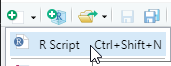

This short course aims to take you through the process of writing your first program in the R statistical programming language. To do this we will be using the R Studio integrated development environment (IDE), a desktop application to support you in writing R scripts. R Studio supports your programming by flagging up errors in your code as you write it, and helping you manage your analysis environment by giving you quick access to tables, objects and graphs as you develop them. In addition, we will be looking at data analysis using the tidyverse code packages. The tidyverse is a standardised collection of supporting code that helps you read data, tidy it into a usable format, analyse it and present your findings.
The R programming language offers similar functionality to an application based statistical tool such as SPSS, with more of a focus on you writing code to solve your problems, rather than using prebuilt tools. R is open source, meaning that it is free to use and that lots of people have written code in R that they have shared with others. R statistical libraries are some of the most comprehensive in existence. R is popular1 in academia and industry, being used for everything from sales modelling to cancer detection.
# This example shows how R can pull data directly from the internet# tidy it and start making graphs. All within 9 lines of codelibrary(tidyverse)education <-read_csv("https://barrolee.github.io/BarroLeeDataSet/BLData/BL_v3_MF.csv")education %>%filter(agefrom ==15, ageto ==24, country %in%c("Germany","France","Italy","United Kingdom")) %>%ggplot(aes(x=year, y=yr_sch, colour=country)) +geom_point() +geom_line()
Whilst it is possible to use R through menu systems and drop down tools, the focus of this course is to write your own R scripts. These are text files that will tell the computer how to go through the process of loading, cleaning, analysing and presenting data. The sequential and modular nature of these files makes it very easy to develop and test each stage separately, reuse code in the future, and share with others.
This booklet is written with the following sections to support you:
# Code examples and questions appear like thisa <-1+3
[1] Code output appears like this
Courier font indicates keyboard presses, column names, column values and function names.
(If the above doesn’t work follow the instructions here)
2.2 Installation (KCL restricted machine)
load the software center
Search for and install “R Statistics”
Search for and install “RStudio”
You might find this tutorial video helpful:
https://vimeo.com/203516510
2.3 Setting up RStudio and the tidyverse
Open RStudio
On the bottom right-hand side, select Packages, then select Install, then type “tidyverse” into the Packages field of the new window:
Click Install and you should see things happening in the console (bottom left). Wait for the console activity to finish (it’ll be downloading and checking packages).
Add a new R Script using the button

In the new R script, write the following:
Select all the lines and press Control or Command and Enter on your keyboard at the same time. Alternatively, press the button
Check that you have the following in the console window:
After adding a new R Script using the button , there are four parts to R Studio’s interface. For the moment we are most interested in the Script file section, top left.
3.1 Objects and instructions
In programming languages we can attach data to a name, this is called assigning a value to an object (you might also call them variables). To do this in R we use the <- arrow command. For example, I want to put the word "Pete" into an object called myname (note that words and sentences such as "Pete" need speech marks):
myname <-"Pete"print(myname)
[1] "Pete"
We can also perform quick calculations and assign them to objects:
HoursInYear <-365*24print(HoursInYear)
[1] 8760
Type the two examples above into your RStudio script file and check that they work. Adapt them to say your full name and give the number of MinutesInADay
Remember to select code and press control or command and Enter to run it
Objects can form part of calculations, for example, the code below shows how we can use the number HoursInYear to (roughly!) calculate the number of HoursInWeek:
Notice from the above we can perform the main arithmetic commands using keyboard symbols: + (add); - (minus); * (multiply); / (divide); ^ (power)
Objects can change values when you run code. For example in the code below:
a <-2000b <-5a <- ba <- a * bprint(a)
[1] 25
What’s going on here?
line 1 sets a to equal 2000 (note: don’t use commas in writing numbers a <- 2,000 would bring up an error),
line 2 sets b to equal 5,
line 4 overwrites the value of a with the value stored in b, making object a now equal to 5
line six is now 5 * 5
what are the outputs of the following code snippets/what do they do? One of the examples might not output anything, why is that? Type the code into your script file to check your answers:
The actual name of an object has no effect on what it does (other than invalid names breaking your program!). For example age <- "Barry" is perfectly valid to R, it’s just a real pain for a human to read.
Which of these are valid R object names:
my_Number
my-Number
myNumber!
first name
FIRSTname
i
3names
names3
Note
For more information on the R programming style guide, see this
3.3 Comments
Code can often look confusing and it’s a good idea to add # comments to your code to make it more understandable for you and others. The computer ignores comments when running your code:
# this calculates the average sales per shopincome1 <-132income2 <-665income3 <-233income4 <-1200shops <-4# everything after the hash is a commentavgSales <-sum(income1, income2, income3, income4) / shops # sometimes you might want to comment out code that# is no longer needed, but might be useful later# standard_deviation <- sd(c(income1, income2, income3, income4) )# the above code isn't runprint(avgSales) # but this code is
[1] 557.5
Using only the comment # symbol, can you edit this code to not charge tax on top of the total_sales?
# this prints the total cost of salestotal_sales <-4000tax <- total_sales *0.2cost <- total_sales + taxprint(cost)
To bring together everything that you have learnt so far, try this question:
Julie is exactly 40 years old today, this means that she has been alive for 40 * 12 or 480 months. How many weeks has she been alive for?
[Extension] try and work out how many seconds old Julie is.
3.4 Data types
We have already met two different datatypes, the character datatype for words and letters (e.g. "Peter") and the numeric datatype for numbers (e.g. 12). Datatypes tell R how to handle data in certain circumstances. Sometimes data will be of the wrong datatype and you will need to convert between datatypes.
weeks <-4days_in_week <-"7"# we now attempt to multiply a number by a string# but it doesn't work!total_days <- weeks * days_in_week
Error in weeks * days_in_week: non-numeric argument to binary operator
Whilst R will understand what to do when we multiply numbers with numbers, it gets very confused and raises an error when we try to perform an arithmetic operation using words and numbers.
To perform the calculation we will need to convert the days_in_week from a string to a number, using the as.numeric( ) command:
weeks <-4days_in_week <-"7"# we now attempt to multiply a number by a stringtotal_days <- weeks *as.numeric(days_in_week)
There is a logical datatype for boolean values of TRUE and FALSE. This will become a lot more useful later.
legs_snake =TRUE# you can specify logical values directlydogs_legs =4legs_dog = dogs_legs >0# or as part of a calculation# Do dog's have legs?print(legs_dog)
[1] TRUE
There are actually three datatypes for numbers in R, numeric for most of your work, the rarer integer specifically for whole numbers and the even rarer complex for complex numbers. When you are looking at categorical data, factors are used on top of the underlying datatype to store the different values, for example you might have a field of character to store countries, factors would then list the different countries stored in this character field.
Can you spot the error(s) in this code and fix them so it outputs: “July is month 7”?
Can you spot the error(s) in this code and fix it?
a <-7b <-"8"c <-3print(a + b + c)
Can you spot the error(s) in this code and fix it?
pass mark <-50exam_grade <-50# did the student pass?print(exam_grade > pass_mark)
Tip
If you want to find out the datatype of an object you can use the structure str command to give you more information about the object. In this instance chr means that month is of character datatype and num means it is of the numeric datatype.
month <-"July"str(month)
chr "July"
month <-7str(month)
num 7
3.5 Stitching things together
Printing raw results to the screen is fine, but you will want to combine results together to make them more meaningful. Annoyingly, R doesn’t allow you to print lots of things at the same time,print("hello", "reader") will bring up an error. To stitch things together ready for printing we use the paste() command. Paste allows us to put combinations of text and objects on the same line:
name <-"Stone henge"age <-5000# stitch the data togetherprint(paste(name, "is", age, "years old"))
[1] "Stone henge is 5000 years old"
name <-"The Queen"birth_year <-1926# this gives the current year as a stringthis_year <-format(Sys.Date(), "%Y")# we could also have written this_year <- 2022# we need to convert the year age <-as.numeric(this_year) - birth_yearprint(paste(name, "is roughly", age, ""))
[1] "The Queen is roughly 96 "
What are the five errors in this code:
place <-"Nantwichpop <- 17,424Print(paste(place "has a population of" , "pop"))
Write code that stores length and width of a rectangular table and calculates and prints the total area in the format:
[1] "table length: 10 table width: 5 area = 50"
3.6 Vectors
So far we have seen how R does simple calculations and prints out the results. Underlying all of this are vectors. Vectors are data structures that bring together one or data elements of the same datatype. E.g. we might have a numeric vector recording the grades of a class, or a character vector storing the gender of a set of students. To define a vector we use c(item, item, ...), where c stands for combine. Vectors are very important to R, even declaring a single object, x <- 6, is creating a vector of size one. Larger vectors look like this:
We can also perform calculations across vectors, in the example below we can find out which students got a better grade in Maths than in English.
# this compares each pair of values# e.g. the first item in maths_grade (5) with# the first item in english_grade (8)# and so on# This returns a logical vector of TRUE and FALSEmaths_grade > english_grade
[1] FALSE FALSE TRUE FALSE TRUE FALSE FALSE
# To work out how many students got a better grade # in maths than in English we can apply sum()# to the logical vector. # We know that TRUE == 1, FALSE == 0,# so sum() will count all the TRUEssum(maths_grade > english_grade)
[1] 2
# we can also use one vector to pick items from another vector# TRUE will pick an item, FALSE will ignore it# for each maths_grade > english_grade that is TRUE# the name in that position in the student vector will be shownstudents[maths_grade > english_grade]
[1] "Mo" "Olu"
# if you want to find out the average grade for# each student in maths and english# add both vectors together and divide by 2(maths_grade + english_grade) /2
[1] 6.5 4.5 3.5 1.5 5.0 5.5 8.5
You should be careful when trying to compare vectors of different lengths. When combining vectors of different lengths, the shorter vector will match the length of the longer vector by wrapping its values around. For example if we try to combine a vector of the numbers 1 ot 10 with a two item logical vector TRUEFALSE, the logical vector will repeat 5 times: c(TRUE, FALSE, TRUE, FALSE, TRUE, FALSE, TRUE, FALSE, TRUE, FALSE). We can use this vector as a mask to return the odd numbers, TRUE means keep, FALSE means ignore:
nums <-c(1,2,3,4,5,6,7,8,9,10)mask <-c(TRUE, FALSE) # you can see the repeat of mask by pasting them togetherpaste(nums, mask)
# now to filter out the numbers we don't wantnums[mask]
[1] 1 3 5 7 9
This might not seem very useful, but it comes in very handy when we want to perform a single calculation across a whole vector. For example, we want to find all the students who achieved grade 5 in english, the below code creates a vector of 5s the same size as english_grade:
# this can also be rewritten english_grade >= c(5)# note, when we are doing a comparison, we need to use double ==students[english_grade ==5]
[1] "Al"
#which is the same asstudents[english_grade ==c(5,5,5,5,5,5,5)]
[1] "Al"
Important
When we are doing a comparison, we need to use double == equals sign. Using a single equals sign is the equivalent of an assignment = is the same as <-
Tip
There are several shortcuts that you can take when creating vectors. Instead of writing a whole sequence of numbers by hand, you can use the seq(start, finish, step) command. For example:
# the step default is 1, so you can miss it from seq(1,10,1)seq(1,10) ==c(1,2,3,4,5,6,7,8,9,10)seq(1,10,2) ==c(1,3,5,7,9)
This allows for some pretty short ways of solving quite complex problems, for example if you wanted to know the sum of all the multiples of 3 and 5 below 1000, you could write it like this:
# the unique() command gives you the unique items in a vectorsum(unique(c(seq(3, 999, 3), seq(5, 999, 5))))
Another shortcut is writing T, F, or 1, 0 instead of the whole words TRUE, FALSE:
c(T, F) ==c(1, 0) ==c(TRUE, FALSE)
Can you spot the four problems with this code:
nums <-v(1,2,"3",4,7,2,2)sum(nums)mean(nums)# return a vector of all numbers greater than 2nums(nums >=2)
Create a vector to store the number of glasses of water you have drunk for each day in the last 7 days. Work out:
the average number of glasses for the week,
the total number of glasses,
the number of days where you drank less than 2 glasses (feel free to replace water with your own tipple: wine, coffee, tea, coke, etc.)
Using the vectors below, create a program that will find out the average grade for females taking English:
Now you have covered the basics of R, it’s time for some questions to check your understanding. These questions will cover all the material you have read so far and don’t be worried if you need to go back and check something. Exemplar answers are provided, but don’t worry if your solution looks a little different, there are often multiple ways to achieve the same outcome.
Describe three datatypes that you can use in your program?
What are two reasons that you might use comments?
Which object names are valid?
my_name
your name
our-name
THYname
Can you spot the seven errors in this code:
stu1 <-122stu <-13stu3 <-"15"# now work out the average of the agesavg <- (Stu1 + stu2 + stu3) /3print("students are, on average, "+ avg, years old)
Write a program that stores objects for your firstName and secondName. Make it print out:
[1] "Hello Mike Smith"
(where Mike Smith is your name)
Add comments to the code from the previous question explain how it works
Calculate the number of seconds in a week and print out there are [num] seconds in a week, where [num] is a number
[Extension] You have been given the vectors below that store distances and times between locations in England.
convert all the times in seconds
convert the distances into kilometres
find times shorter than 3 hours
calculate and print the origin and destination of trips over 150 miles
origin <-c("Manchester", "London", "Cardiff", "Colchester", "Canterbury")dest <-c("London", "Cardiff", "Colchester", "Canterbury", "Manchester")time <-c(258, 233, 253, 131, 266) # in minutesdist <-c(200, 149, 224, 94, 308) # in miles
[Extension] Calculate the number of seconds since 1970.
[Extension] find the minimum and maximum times and distances in Question 8, above.
4 The tidyverse
The tidyverse is a free collection of programming packages4 that will allow you to write code that imports data, tidys it, transforms it into useful datasets, visualises findings, creates statistical models and communicates findings to others data using a standardised set of commands.
Data science workflow - RStudio
For many people the tidyverse is the main reason that they use R. The tidyverse is used widely in government, academia, NGOs and industry, notable examples include the Financial Times and the BBC. Code in the tidyverse can be (relatively) easily understood by others and you, when you come back to a project after several months.
The code above transforms data and converts it into a graph. It doesn’t have any comments, but you should hopefully be able to understand what a lot of the code does by just reading it. Can you guess what each line does? Try running the code by selecting parts of it and pressing control | command and Enter
In this section you will look at some of the basic features of the tidyverse, with a focus readxl for loading data, dplyr for tidying data, and ggplot2 for presenting your findings.
4.0.1 Loading data
This section will look at how R stores data in dataframes (the equivalent of tables in a spreadsheet), and how we can access columns and rows from these dataframes. First we need to get some data into R so we can start analysing them. For this example we are going to be using GCSE results for English schools in 2018/195.
R can load data in all the standard statistical formats, including SPSS, SAS, Stata, CSV, SQL and Excel. For this example we are going to be loading school results and school details from an Excel file called dfe_data.xlsx.
Download the dfe_data.xlsx Excel file from here and save it to your computer where your R code file is.
Open the file to see what it contains.
Copy the location of the file (see next step for help)
To find the location of a file in Windows do the following:
Navigate to the location of the file in Windows Explorer:
Click on the address bar
Copy the location
To find the location of a file in Mac OSX do the following: https://support.apple.com/en-gb/guide/mac-help/mchlp1774/mac
# load the basic tidyverse libraries and readxl# readxl is for reading and writing Excel files # and not loaded by the tidyverse by defaultlibrary(tidyverse)library(readxl)# set the working directory to be where your data is stored# note that you need to convert the backslashes \ in the address to forwardslashes /setwd("C:/Users/Peter/Google Drive/Kings/R intro/code")# setwd("C:/Users/w1926273/Google Drive/Kings/R intro/code")# then load the Results and Schools sheets from dfe_data.xlsxresults <-read_excel("dfe_data.xlsx", "Results")schools <-read_excel("dfe_data.xlsx", "Schools")
You might have found that you get an error if you don’t convert your backslashes \ into forwardslashes /. It’s common mistake and very annoying. In most programming languages a backslash signifies the start of a special command, for example \n signifies a newline.
With R there are three ways to get around the problem of backslashes in file locations, for the location:"C:\myfolder\" we could:
replace them with forwardslashes (as shown above):"C:/myfolder/"
replace them with double backslashes (the special character specified by two backslashes is one backslash!):"C:\\myfolder\\"
use the inbuilt R command to deal with filenames: r"[C:\myfolder\]"
You might struggle to get the above code to work if you have your data files in a different location to your code files. If that is the case, you can give R the full address of where your files live, for me that was the following:
When you load the tables you might find that there is a warning:
Warning
Warning in read_fun(path = enc2native(normalizePath(path)), sheet_i = sheet, : Expecting numeric in I27750 / R27750C9: got ‘SUPP’
This is telling you that a column in the dataframe is nearly all numeric, except for some rows which are storing the character string SUPP. This is the DfE’s way of suppressing data for schools and subjects that are smaller than 5 students. We’ll deal with these when we come to cleaning our data.
You can check that the tables have loaded correctly by typing the object names and running them (control|command and Enter)
Alternatively, click on the Environment panel and the table icon to explore each table:
Alternatively, you can also hold down command|control and click on the table name in your R Script to view the table.
Note
To learn more about loading data from in other formats, e.g. SPSS and STATA, look at the tidyverse documentation for haven.
The results and schools dataframes are made up of multiple columns, with each column acting like a vector, which means each column stores values of only one datatype. If we look at the first four columns of the schools table, you can see the ID column is a <dbl> (numeric) and the other three columns are of type <chr> (character).
[1] "ID LA Name TypeOfEstablish~"
[1] "<dbl> <chr> <chr> <chr>"
Note
Vectors are data structures that bring together one or more data elements of the same datatype. E.g. we might have a numeric vector recording the grades of a class, or a character vector storing the gender of a set of students. To define a vector we use c(item, item, ...), where c stands for combine. Vectors are very important to R, even declaring a single object, x <- 6, is creating a vector of size one.
We can find out some general information about the tables we have loaded. nrow and ncol tell you about the dimensions of the table
nrow(results) # how many rows are in the results table
[1] 677784
ncol(results) # how many columns are in the results table
[1] 11
If we want to know the names of the columns we can use the names() command that returns a vector:
As mentioned, the columns in the tables are very much like a collection of vectors, to access these columns we can put a $ [dollar sign] after the name of a table. This allows us to see all the columns that table has, using the up and down arrows to select, press the Tab key to complete:
We can apply functions to the returned column/vector, for example: sum, mean, median, max, min, sd, round, unique, summary, length. To find all the different values contained in a column:
unique(results$Qualification) # the unique values in this column
[1] "Free standing Maths Qual Level 3"
[2] "GCE AS level"
[3] "GCSE (9-1) Full Course"
[4] "Grade 8 Music or Dance"
[5] "BTEC First Award L1/2 - Band C - P-D*"
[6] "GCSE (9-1) Full Course (Double Award)"
[7] "GCSE Full Course"
[8] "BTEC Technical Award L1/2 - Band C - P-D*"
[9] "OCR Level 1/2 Cambridge National Certificate"
[10] "Other General Qualification at Level 2"
[11] "VRQ Level 2"
[12] "Grade 6 Music or Dance"
[13] "Grade 7 Music or Dance"
[14] "VRQ Level 1"
[15] "WJEC L1/L2 Award"
[16] "Grade 8 Drama Music Lit Speech"
[17] "AQA Technical Award L1/2 - Band C - L1 Credit-Advanced Credit, L2 P-D*"
[18] "Grade 6 Drama Music Lit Speech"
[19] "Grade 7 Drama Music Lit Speech"
[20] "Graded Music or Dance"
[21] "Other General Qualification at Level 1"
Tip
To get a good overview of what a table contains, you can use the str and summary commands.
Often when performing calculations, you will meet the NA value, this will most likely derail your calculations:
mean(schools$NumberOfBoys)
[1] NA
The reason that the mean function is returning NA is because there are many schools that can’t have any students recorded as being boys according to the DfE’s data rules, i.e. schools that are closed. Rather than recording NumberOfBoys as 0 for these schools, the DfE has used NA. To get past this, make sure you remove these schools from your calculations, by adding na.rm = TRUE (NA remove) inside the function call:
mean(schools$NumberOfBoys, na.rm =TRUE)
[1] 184.44
Tip
Check your data for NAs before running calculations. The na.rm = TRUE can be applied to most mathematical functions
How many different types of subject Description are there?
What’s the average value for free school meals (FSM)?
What Region values exist for England?
Load the results and schools tables and explore the data from the environment panel.
[Extension] What are the largest, minimum and average school cohort sizes? (hint, you’ll need to add two fields on the schools table) [Super Extension if you’ve done the vector section above] can you get R to output the name of the largest school only using vectors and R?
4.0.2 Piping
Piping allows us to break down complex tasks into manageable chunks that can be written and tested one after another. There are several powerful commands in the tidyverse as part of the dplyr package that can help us group, filter, select, mutate and summarise datasets. With this small set of commands we can use piping to convert massive datasets into simple and useful results. Using the pipe %>% command, we can feed the results from one command into the next command making for reusable and easy to read code.
how piping works
Note
The pipe command we are using %>% is from the maggrittr package which is installed alongside the tidyverse. Recently R introduced another pipe |> which offers very similar functionality. The examples below use the %>% pipe.
Let’s look at a piped example by using the results table. This table contains a field called Total_students which we should be able to be used to work out the number of students in the school entering exams in 2018/19. But the data is very messy. For a school’s results Total_students, i.e. total number of students in a cohort, appears for each subject a school entered students for, but not just that, it appears for each individual grade grouping!?
# A tibble: 165 x 5
ID Total_students Description Grade Entries
<dbl> <dbl> <chr> <chr> <dbl>
1 100055 115 Arabic Total number entered 1
2 100055 115 Art & Design Total number entered 19
3 100055 115 Art & Design 8 2
4 100055 115 Art & Design 7 2
5 100055 115 Art & Design 5 4
6 100055 115 Art & Design 4 4
7 100055 115 Art & Design 3 5
8 100055 115 Art & Design 2 1
9 100055 115 Art & Design 1 1
10 100055 115 Biology Total number entered 22
# ... with 155 more rows
It’s no good summing the total number of students in the results table together if the students are counted more than once for each school, e.g. school ID 100055 has 165 entries forTotal_students. What we want to do is to get one Total_students for each school, we can do this by grouping the results for each school together, then finding the unique value for Total_students. As each result row for the same school has the same Total_students value, unique(Total_students) will return a single value for each individual school.
# A tibble: 4,648 x 2
ID Total
<dbl> <dbl>
1 100001 107
2 100003 200
3 100049 199
4 100050 175
5 100051 154
6 100052 200
7 100053 137
8 100054 107
9 100055 115
10 100056 111
# ... with 4,638 more rows
Note
we met the assignment command earlier <-. Within the tidyverse commands we normally use the equals sign instead =, but you can use <- if you like.
Knowing that we now have one result for each school, we can now feed the individual school sizes into another summarise, to find the total number of students entered into an exam for the whole country in 2018/19:
Let’s look a little more closely at the commands we have just used.
4.0.2.1 Group and summarise
group_by() collects data together using one or more column values, you can then perform calculations using that grouping.
summarise performs a calculation on a given grouping, returning the result but dropping all the columns except for the result and the given grouping columns.
ungroup() gets rid of any current grouping.
Taking another example, we might want to find the number of students taking each subject in the results table, e.g. the number of GCSE CS students entered in 2018/19
gets the results dataframe and pipes it into the next instruction, whatever results from all the piping will be stored <- into the sub_entries object
groups the results by individual school (ID) and by subject taken in that school (Description).
creates a new column called Total and stores the maximum value from the Entries column, i.e. the total number entered for each subject. As the piped data is currently grouped, this will work out the total number entered for every school and subject combination.
as the pipe currently stores the total number of students entered for each subject in each school, we now group on Descriptiononly to allow us to look at individual subjects across all schools
creates a new column called Subject_Total and stores the sum of all the Total in each Description grouping, i.e. the number of students taking each subject for the whole of England
In the example below, we have assigned the output of the tidyverse pipe calculation into a new object called sub_entries. If you run the code you will be able to access at the results in the Environment panel rather than just the console.
sub_entries # output the new object to the console
# A tibble: 130 x 2
Description Subject_Total
<chr> <dbl>
1 Accounting/Finance 1
2 Additional Mathematics 2
3 Additional Mathematics FSMQ 7560
4 Ancient History 817
5 Animal Care (Non-Agricultural) 1285
6 Applied Engineering 2846
7 Applied ICT 35960
8 Arabic 2333
9 Art & Design 62137
10 Art & Design (3d Studies) 3904
# ... with 120 more rows
We can also use the n() command to count the number of schools that meet certain criteria. n() returns the number of rows in a table or group.
`summarise()` has grouped output by 'TypeOfEstablishment'. You can override
using the `.groups` argument.
# A tibble: 84 x 3
# Groups: TypeOfEstablishment [37]
TypeOfEstablishment Open total
<chr> <chr> <int>
1 Academy 16-19 converter Open 29
2 Academy 16 to 19 sponsor led Open 1
3 Academy alternative provision converter Closed 1
4 Academy alternative provision converter Open 72
5 Academy alternative provision sponsor led Closed 5
6 Academy alternative provision sponsor led Open 26
7 Academy alternative provision sponsor led Proposed to open 1
8 Academy converter Closed 172
9 Academy converter Open 5751
10 Academy converter Open, but proposed to close 3
# ... with 74 more rows
Using the schools table, find the maximum FSM value for each LA
Using the schools table, find the mean FSM for each OfstedRating
Using the schools table, find the mean FSM for each LA, also grouping by whether the school is Open
[Extension] Using the results table, find the total number of students entering exams by School_type.
4.0.2.2 Select, filter and mutate
select let’s us pick which columns we want to display.
filter takes one or more criteria, allowing us to only display the rows that meet our requirements.
mutate creates a column based on a set value, or one or more other columns. It’s similar to summarise, but it doesn’t get rid of all the other non-grouped columns or reduce the number of rows in a grouping.
Let’s take another example. Imagine we only want to know details about the schools where they had students entering GCSE Chinese.
# A tibble: 458 x 5
ID School Total_students Description Entries
<dbl> <chr> <dbl> <chr> <dbl>
1 100001 City of London School for Girls 107 Chinese 33
2 137181 The UCL Academy 171 Chinese 61
3 100053 Acland Burghley School 137 Chinese 1
4 100054 The Camden School for Girls 107 Chinese 1
5 100065 University College School 132 Chinese 5
6 100076 South Hampstead High School 103 Chinese 1
7 138449 Harris Academy Greenwich 187 Chinese 1
8 145315 The Halley Academy 188 Chinese 1
9 141309 Stationers' Crown Woods Academy 254 Chinese 1
10 100192 The John Roan School 221 Chinese 1
# ... with 448 more rows
gets the results dataframe and pipes it into the next instruction,
filter returns only those rows that have “Chinese” in their Description column, i.e. it filters out all of the other subjects
filter returns only those rows that have “Total number entered” in their Grade column, i.e. it filters out all of the individual grade numbers.
select gets rid of all the columns other than those listed.
We can now add a new column by using mutate, to look at the percentage of each provider taking Chinese, and filter on those with more than 0.50 (50%) taking it:
# A tibble: 2 x 6
ID School Total_students Description Entries per
<dbl> <chr> <dbl> <chr> <dbl> <dbl>
1 139703 Chobham Academy 165 Chinese 91 0.552
2 136359 Dartford Grammar School 150 Chinese 82 0.547
Note
You can see in the last example that we had two filters, one after another. This acts like an AND, i.e. the code filters for Description == "Chinese"ANDGrade == "Total number entered". If you want to AND your filters you can also put them together, as shown below:
# A tibble: 458 x 5
ID School Total_students Description Entries
<dbl> <chr> <dbl> <chr> <dbl>
1 100001 City of London School for Girls 107 Chinese 33
2 137181 The UCL Academy 171 Chinese 61
3 100053 Acland Burghley School 137 Chinese 1
4 100054 The Camden School for Girls 107 Chinese 1
5 100065 University College School 132 Chinese 5
6 100076 South Hampstead High School 103 Chinese 1
7 138449 Harris Academy Greenwich 187 Chinese 1
8 145315 The Halley Academy 188 Chinese 1
9 141309 Stationers' Crown Woods Academy 254 Chinese 1
10 100192 The John Roan School 221 Chinese 1
# ... with 448 more rows
You might want to OR your filter, for example finding all the results that are either "Chinese"OR"French". You can do this using the bar | character:
results %>%filter(Description =="Chinese"|# the bar character finds Description =="French", Grade =="Total number entered") %>%select(ID, School, Total_students, Description, Entries)
# A tibble: 3,760 x 5
ID School Total_students Description Entries
<dbl> <chr> <dbl> <chr> <dbl>
1 100001 City of London School for Girls 107 Chinese 33
2 100001 City of London School for Girls 107 French 45
3 137181 The UCL Academy 171 Chinese 61
4 137181 The UCL Academy 171 French 5
5 100050 Parliament Hill School 175 French 63
6 100051 Regent High School 154 French 62
7 100052 Hampstead School 200 French 54
8 100053 Acland Burghley School 137 Chinese 1
9 100053 Acland Burghley School 137 French 26
10 100054 The Camden School for Girls 107 Chinese 1
# ... with 3,750 more rows
Using commas , and bars | you can create complex filters.
Adjust the above code to find all schools where over 60% of students take German, or another subject or subjects of your choice.
Important
Remember to include the == signs when looking to filter, >=, < etc also work.
Remember matching is case sensitive, “chinese” != “Chinese”
Having lots of results can get a little confusing, try to make sure that you comment your code and don’t be afraid to store pipe outputs in separate objects and explore them individually using the Environment panel. You can also use intermediate results in other pipes E.g. we might want to look at the states for open schools, by filtering on Open == "Open" we can store the result in Open_schools and then further analyse this dataset:
# store details on all the open schools in Open_schoolsOpen_schools <- schools %>%filter(Open =="Open")# use Open_schools to find stats only about schools that are openOpen_schools %>%group_by(LA) %>%mutate(All_schools =n()) %>%ungroup() %>%group_by(LA, EstablishmentGroup, All_schools) %>%summarise(total =n()) %>%# the round() function allows you to specify the number of significant digitsmutate(per =round(total/All_schools, 2))
# A tibble: 1,049 x 5
# Groups: LA, EstablishmentGroup [1,049]
LA EstablishmentGroup All_schools total per
<chr> <chr> <int> <int> <dbl>
1 Barking and Dagenham Academies 65 11 0.17
2 Barking and Dagenham Colleges 65 1 0.02
3 Barking and Dagenham Free Schools 65 7 0.11
4 Barking and Dagenham Independent schools 65 2 0.03
5 Barking and Dagenham Local authority maintained scho~ 65 41 0.63
6 Barking and Dagenham Special schools 65 3 0.05
7 Barnet Academies 173 30 0.17
8 Barnet Colleges 173 2 0.01
9 Barnet Free Schools 173 10 0.06
10 Barnet Independent schools 173 36 0.21
# ... with 1,039 more rows
4.0.2.3 Arranging results
The results returned by pipes can be huge, so it’s a good idea to store them in objects and explore them in the Environment window where you can sort and search within the output. There might also be times when you want to order/arrange the outputs. We can do this quite easily in the tidyverse by using the arrange() function. In the example below we are arranging the output by the descending value of the total providers, followed by the school Phase name (ordering any rows where total is the same; e.g. rows 18 and 19).
Display (Select) only the ID, LA, Gender, OfstedRating from a school
Show all the Open schools that have exactly 400 girls.
Filter all the schools that got Outstanding as an OfstedRating, display the ID, Name, FSM and TypeOfEstablishment, and arrange them by descending FSM.
Count the number (n()) of Open schools that have an FSM number of over 0.95 (You don’t have to use summarise, but it helps)
How many Open schools in each (group_by) Region have more than 2000 students?
Count (summarise) the number of schools, grouped as both Open and Closed under each OfstedRating, make the Open results appear at the top of the table. Output the result to an object and explore it in the Environment area.
[Extension] What’s the average FSM rating for each Gender of school in each Region? arrange the results so the most impoverished area appears first.
4.0.3 Joing tables
We currently have two tables of data, the results table and the schools table. Wouldn’t it be great if we could combine the school details with the results of the school? It would then allow us to run models looking at the impact of school demographics on exam entries and results.
There are several different join commands in R, the command we are interested in left_join(). In short, this command will take one table, and link it with rows from the other table that match a given column or columns. This matches the left_join diagram shown in the helpsheet below:
We want to join each results to matching schools in the schools table, i.e. only include the details about schools where results exist. If school X doesn’t have any results for 2019 we shouldn’t copy it over, as it won’t have any rows in the results table that matches its ID .
We can now check it works by running the following command that selects data from the results table (e.g. Description, Grade) and data from the schools table (e.g. FSM, NumberOfBoys):
As we have already noted, with exploratory data analysis it’s useful to store results in objects to use later. We might want to store our findings more permanently to use later or share with others, saving them as CSV, Excel or SPSS files.
The easiest way to do this in R is to use the read.csv() function. This function lets you specify the name of the object you want to save, along with where you want to save it.:
You can write excel files using the openxlsx package
4.0.4.1 Summary questions
5 Graphing
The tidyverse includes the incredibly powerful ggplot2 package. This package is pretty much the industry standard for making graphs for publication. ggplot2 is built on the grammar of graphics where you build graphs by specifying underlying attributes and layering geometric objects on top of each other. In the diagram below you can see how a graph is built from a scale, a coordinate system and geometric objects.
Graphs are layered: - Data - - Aesthetics - Scales - Geometric objects - Statistics - Facets - Coordinate system
geom_bar
geom_point
geom_text
facets
levels
colours
5.1 exporting plots
6 Statistical analysis in R
geom_smooth
geom_box
7 Pretty tables
Footnotes
As of October 2020, Tiobe has R as the 9th most popular programming language: https://www.tiobe.com/tiobe-index/ Many other, contradictory, ranking systems exist.↩︎
object names with full stops in them are also allowed e.g. my.name, but not recommended!↩︎
camelCase has a capital letter in the front or front and middle forming the camel’s hump(s), there are multiple naming conventions, it doesn’t matter what you pick, just stick to one of them↩︎
packages contain functionality that isn’t built into R by default, but you can choose to load or install them to meet the needs of your tasks. For example you have code packages to deal with SPSS data, and other packages to run machine learning algorithms. Nearly all R packages are free to use! You’ll sometimes see the words package and library used interchangeably, technically the library is the place where the packages are stored.↩︎
Data is from https://www.compare-school-performance.service.gov.uk/download-data and https://get-information-schools.service.gov.uk/. Data for 2020 was witheld by the government and 2021 doesn’t include grades.↩︎


3.3 Comments
Code can often look confusing and it’s a good idea to add
# commentsto your code to make it more understandable for you and others. The computer ignores comments when running your code:Using only the comment
#symbol, can you edit this code to not charge tax on top of thetotal_sales?To bring together everything that you have learnt so far, try this question:
Julie is exactly 40 years old today, this means that she has been alive for
40 * 12or480months. How many weeks has she been alive for?print( )the answer,